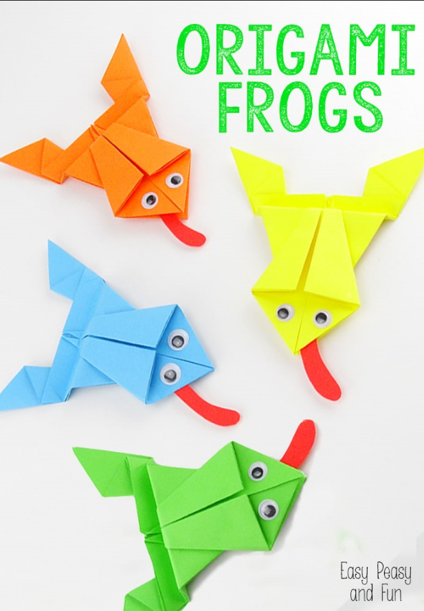
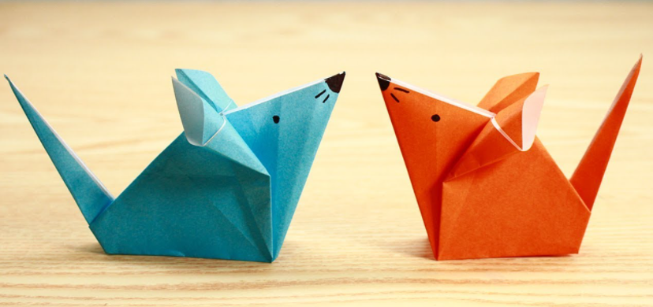

Interesting facts about Frogs
- Frogs don't need to drink water as they absorb it through their skin.
- Some frogs can jump over 20 times their own body length; that is like a human jumping 30m.
- A group of frogs is called an army.

Interesting facts about Rats
- Rats can swim
- A Rat's Teeth Never Stop Growing
- Rats don't like the smell of peppermint

Interesting facts about Bats
- Bats can find their food in total darkness.
- Bats are the ONLY flying mammal.
- Bats are immune to many diseases
Interesting facts about Fishes
- Catfish have over 27,000 taste buds, whereas humans have only 9,000.
- Did you know, fish can get sunburn, but it is unusual unless there is something about their environment that does not allow them to seek deeper water or some kind of shelter.
- Which kind of fish can live in the coldest temperatures? The answer is the Antarctic ice fish, which have antifreeze in their blood, live permanently at -1°C.
Interesting facts about Pandas
- Pandas are BIG eaters – every day they fill their tummies for up to 12 hours, shifting up to 12 kilograms of bamboo!
- Baby pandas are born pink and measure about 15cm – that’s about the size of a pencil!
- Like other bears, pandas can swim! They do not, however, hibernate, as they are unable to store energy over long periods of time